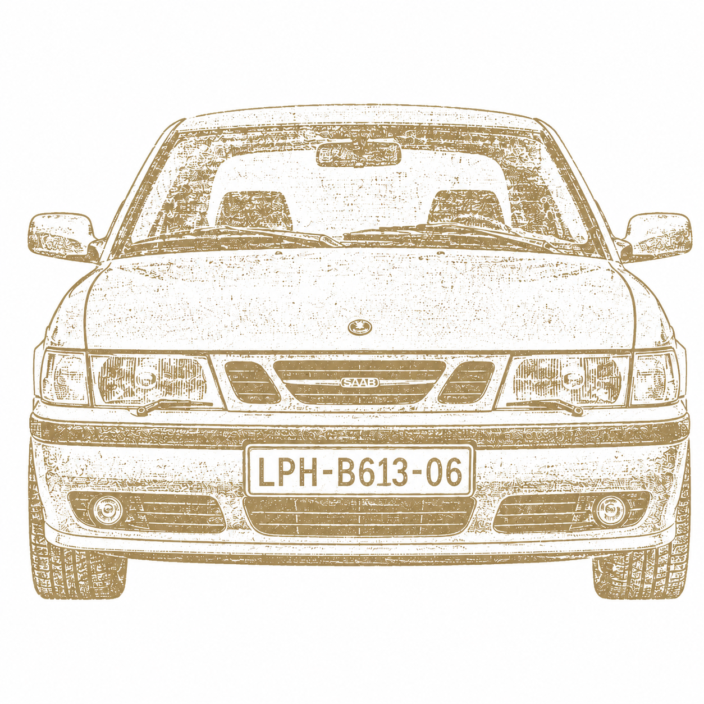
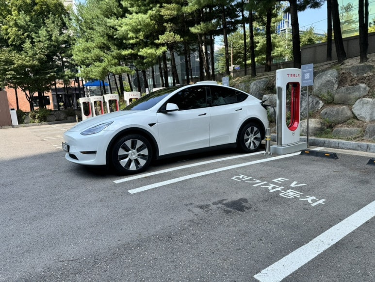
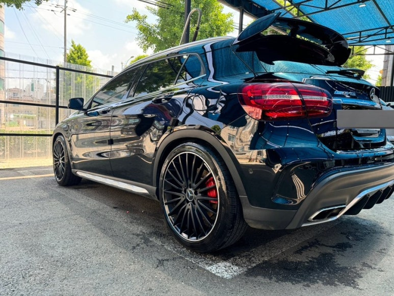
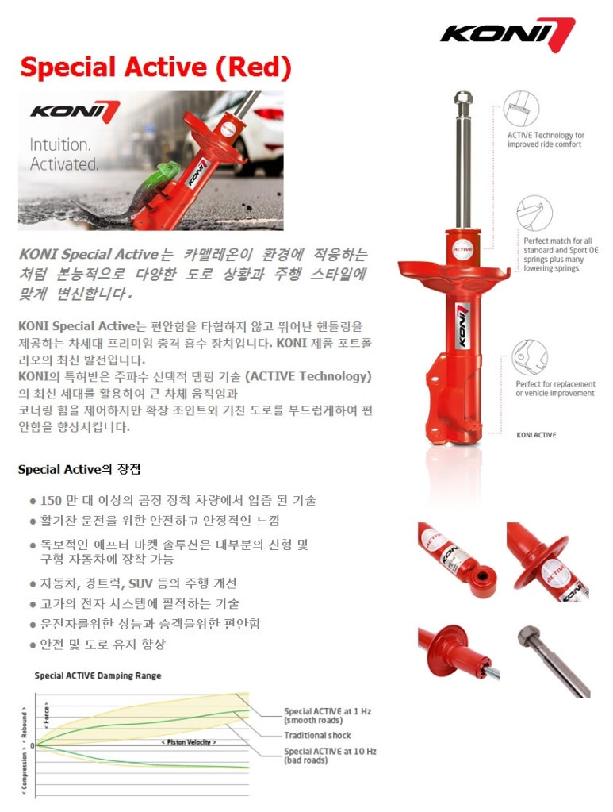
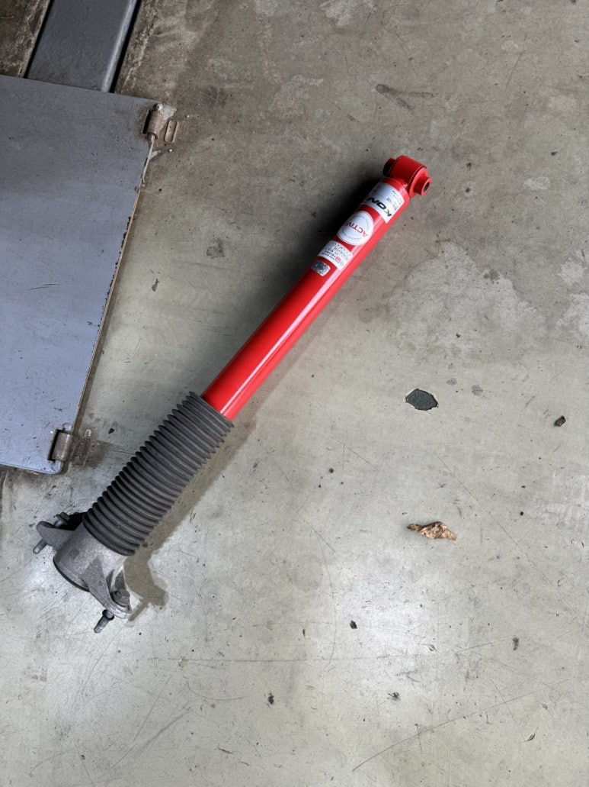
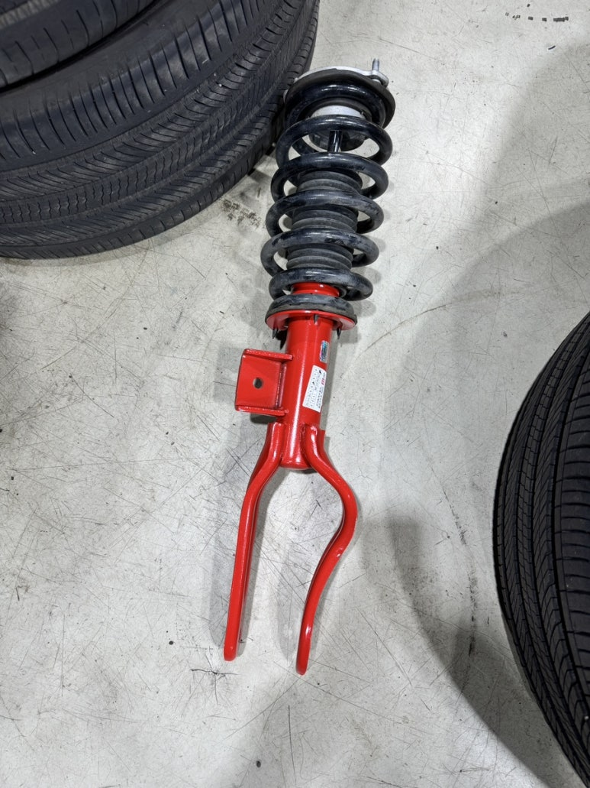
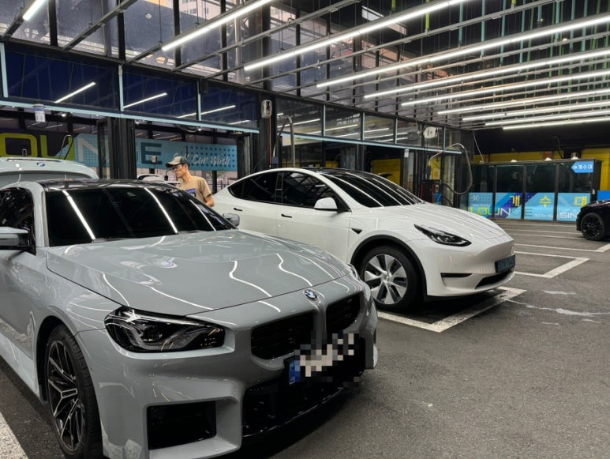

나이트 패널처럼.
꼭 필요한 것만 남기고 달린다.
자동차별 · LPH-B613-06 · HAM MEDIA 별자리
자동차별
한 번 간 길은
잊지 않는 사람의 별.
차를 좋아해 멀리 다녔고, 많은 사람을 만났다.
그러다 알았다. 나는 길을 잘 찾는 사람이라는 걸.
길 찾던 그 버릇이, 일이 되어 돌아왔다.
막막한 사람에게 방향을 찾아주는 일. 지금 내가 하는 게 그거다.


01 / 방향
길을 외우는 건
지도보다 먼저 몸에 남는다.
기억
없어진 회사지만,
기억은 남는다.
사브 9-3은 자동차를 넘어, 나를 알아주는 느낌으로 남았다. 그래서 이 별의 스탬프도 사브다.
일
길 찾던 버릇이
일이 되어 돌아왔다.
멀리 다니고, 사람을 만나고, 한 번 간 길을 기억하던 감각은 이제 막막한 사람에게 방향을 찾아주는 일로 이어졌다.
02 / 글
차 이야기는 결국
타고 살아본 시간의 이야기다.
문장으로
초창기 모델 Y를 오래 타려면, 피로감도 중요했다.
단단한 승차감을 참고 타다가, 더 나은 방법을 찾고 직접 바꿔본 기록이 있다. 그래서 이 글은 장비 자랑보다 매일 타는 사람의 피로와 만족에 가깝다.
"이제야 차 같네"

03 / 사진
소유보다 사용의 흔적.
사진은 길의 증거로 남는다.


04 / 지도
아직 완성된 지도보다,
몸이 먼저 기억한 길들.
좌표로
내가 달렸던 길들
이 방은 나중에 실제 길과 장소가 더해질 자리다. 지금은 한 번 간 길을 잊지 않는 사람의 감각을 먼저 세운다.
05 / 별 안으로
들어가는 문은 네 개.
이 별은 방향으로 연결된다.
막막한 사람에게
방향을 찾아주는 일.
06 / 마지막 기준
자동차별이
하지 않으려는 말.
차 리뷰가 아니다.
스펙 비교가 아니다.
빠른 차 자랑이 아니다.
비싼 차 전시가 아니다.
내 차가 최고라는 말이 아니다.
자동차별 · 문장
길 위에 남은 사람들
정렬
테슬라 모델 Y 롱레인지 코니 서스펜션
모델 Y · 코니 서스펜션 · 승차감
2021년식 테슬라 모델 Y 롱레인지를 타면서 순정 서스펜션의 단단함은 그냥 그러려니 하고 지냈습니다.
6만 킬로를 달리는 동안에도 덩치가 크고 빠른 차를 잘 잡아주려면 이 정도 단단함은 감수해야 한다고 생각했습니다.
그런데 최근에 모델 3 하이랜드를 시승해보고 깜짝 놀랐습니다.
같은 회사에서 만든 차가 맞나 싶을 정도로 승차감이 훨씬 좋았습니다. 그래서 검색해보니 하이랜드에 장착된 서스펜션이 코니 FSD를 기반으로 만들어졌다는 것을 알게 되었습니다.
후기를 더 찾아보니 대부분 이 서스펜션에 대해 칭찬이 많았습니다. 그래서 직접 장착점을 찾아가 보기로 했습니다.
그곳에서 마침 모델 Y에 코니 서스펜션 작업을 하고 있는 차주를 만났고, 작업이 완료되면 한 번 시승해볼 수 있는지 요청드렸습니다.
다행히 흔쾌히 승낙해주셔서 함께 한 바퀴 시승을 하게 되었습니다.
시승 후 바로 업체에 서스펜션 교체를 요청했습니다.
금액은 제작년 기준 135만 원이었습니다. 지금은 어떨지 모르겠습니다. 작은 돈은 아니었지만, 그 이상의 가치가 있다고 판단했습니다.
교체를 완료한 후, 차를 잘 아는 지인에게 가장 먼저 시승을 시켜봤습니다.
"이제야 차 같네"
그의 첫마디는 "이제야 차 같네"였습니다.
그리고 "이제는 더 깔 데 없이 좋다"는 말도 해주었습니다.
가족들의 반응은 워낙 무던한 성격들이라서인지 "조금 좋아졌네" 정도였지만, 제 개인적인 만족도는 매우 높습니다.
특히 초창기 버전의 모델 Y를 타고 계신 분이라면 강력히 추천드리고 싶습니다.
단단함을 참고 타는 것도 방법이지만,
차를 오래 타려면 내가 매일 느끼는 피로감도 중요하니까요.





자동차별 · 장면
장면으로 남은 사람들
정렬
차와 길의 좌표


관계의 지도
길의 좌표가 쌓이면 지도가 됩니다
태그는 관계의 좌표입니다.
같은 길, 같은 차, 같은 세차장, 같은 방향이 쌓이면 이 별의 지형이 드러납니다.
07 / 다른 별 보기
다른 별 보기
이 별은 HAM MEDIA Design MD 방식으로 정리한 별입니다. 좋아하는 것의 감각을 브랜드의 기준으로 바꾸는 실험이기도 합니다.